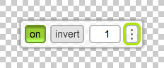

Когда разметка будет готова, к ней потребуется оформление. Если добавить в ваши коды немного вспомогательных стилей, это поможет вам писать CSS проще и быстрее.
Чтобы аккуратно сверстать макет, ничего не потеряв по дороге, нужно или обладать хорошей зрительной памятью, или постоянно сверяться с макетом. Второе отнимает массу времени, и всё равно можно что-то упустить. Для решения проблемы можно просто подложить макет под страницу:
{% highlight html %} {% endhighlight %}Код вставляется в элемент <head>.
Если у вас есть макеты для разных разрешений экрана, их можно менять с помощью медиавыражений:
{% highlight html %} {% endhighlight %}Чтобы фоны и картинки на странице не загораживали макеты, можно добавить opacity для <body>:
Чтобы удобно управлять прозрачностью, можно установить Pixel Glass:
<head> подключение файлов скрипта:
{% highlight html %}
{% endhighlight %}
После этого на странице появится вот такая панель:
Она позволит управлять прозрачностью <body> или выключить её совсем, если она не нужна.
Внимание: если локальный сервер смотрит не в корень проекта, а в другую директорию (например, source), при запуске сервера npm-пакеты окажутся снаружи этой директории, и будут недоступны. В этом случае pixel-glass нужно устанавливать в директорию, куда смотрит сервер, склонировав туда пакет с гитхаба:
И подключать скрипты и стили оттуда:
{% highlight html %} {% endhighlight %}Таким образом макеты будут всё время перед глазами и вам не придётся тратить время на переключение в графический редактор и обратно. Особенно это удобно при работе на маленьком экране, когда не получается разместить рядом фотошоп и браузер.
При использовании этого способа в какой-то момент текст страницы наложится на текст макета, и получится нечитаемая каша. Чтобы отличить их друг от друга, можно CSS-ом раскрасить текст в яркие цвета (например, color: crimson). Получится примерно вот такое:
Сразу видно где страница не совпадает с макетом и что нужно подправить.
Раскладывая элементы по странице, очень удобно видеть где они начинаются и где заканчиваются. Самый простой способ добавить границы выглядит так:
{% highlight css %} .yourclass { outline: 2px solid deeppink; } {% endhighlight %}Почему outline, а не border? outline не влияет на блочную модель элемента и не меняет его размеры, как это делает border.
Чтобы добавить обводки сразу нескольким крупным блокам, можно использовать такой код:
{% highlight css %} BODY > * { outline: 2px solid deeppink; } BODY > * > * { outline: 2px dashed lime; outline-offset: -2px; } BODY > * > * > * { outline: 2px dotted dodgerblue; outline-offset: -4px; } {% endhighlight %}В действии это выглядит примерно так:
See the Pen yaXGpa by yoksel (@yoksel) on CodePen.
Этот код тоже можно вставить в head или лучше положить его в файл с стилями, но можно сделать ещё удобнее: добавьте в браузер Stylish (плагин для кастомного CSS) и подключите этот код через него — тогда в любой момент вы сможете включить или выключить обводки не покидая страницу.
Также можно добавить ещё больше обводок или задать свои цвета (цвета удобно задавать названиями).